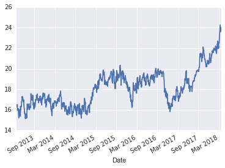
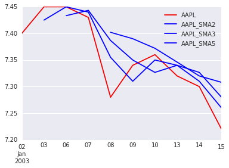
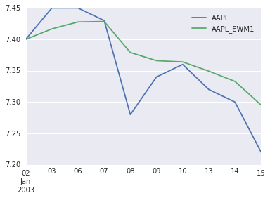
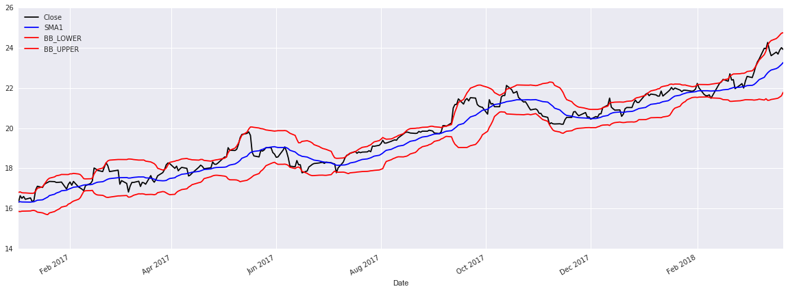
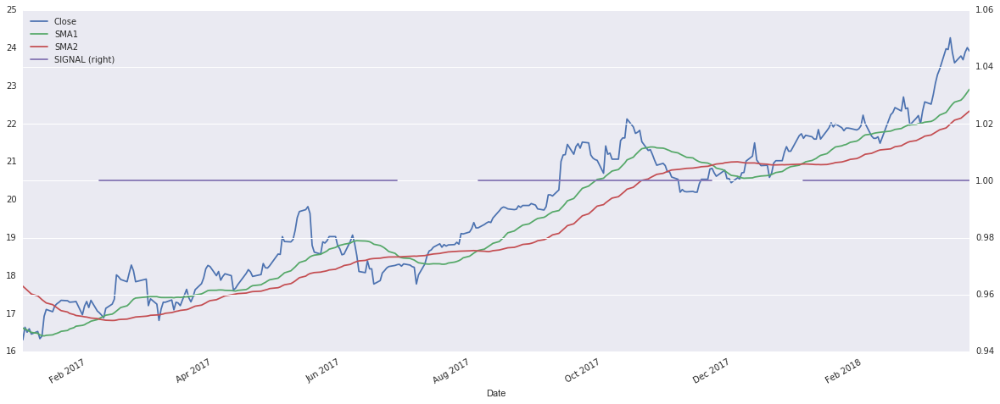
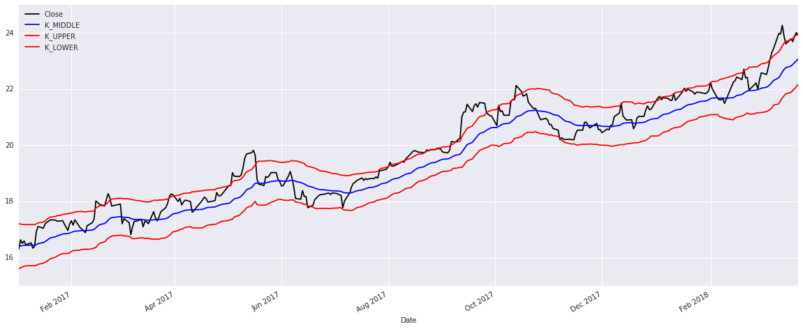

POSTS
Technical indicators
Introduction
According to investopedia - are mathematical calculations based on the price, volume, or open interest of a security or contract. So by analyzing historical data, technical analysts use indicators to predict the future price movements.
The idea of this post is to show up how to calculate the most common one using the so famous SciPy stack, this is far from being an advising in this field, but a playground and notes about the research.
The data is extracted from Yahoo finance, for this following example we are going to use Bovespa ABEV3.
%matplotlib inline
import numpy as np
import pandas as pd
import seaborn as sns
sns.set()
data = pd.read_csv('ABEV3.SA.csv').dropna()
data = data.set_index(data['Date'].apply(lambda x: datetime.datetime.strptime(x, '%Y-%m-%d')), drop=True)
data['Close'].describe()
data['Close'].plot()
Moving average
In the context of stock it can be used as a late trend indicator, basically shows the average value of a security's price over a period of time. When calculating a moving average, a mathematical analysis of the security's average value over a predetermined time period is made.
Simple Moving Average
For this one the average moves and changes each day as the oldest value is dropped out of the calculation and new day's value added in. Lets add 2, 3 and 5 days average for a 10 samples.
rolling = 5
df = pd.read_csv('stock_px_2.csv', parse_dates=True, index_col=0)
test_data = df.iloc[:10][ ['AAPL'] ]
test_data['AAPL_SMA2'] = test_data['AAPL'].rolling(2).mean()
test_data['AAPL_SMA3'] = test_data['AAPL'].rolling(3).mean()
test_data['AAPL_SMA5'] = test_data['AAPL'].rolling(5).mean()
AAPL AAPL_SMA2 AAPL_SMA3 AAPL_SMA5 AAPL_EWM1
2003-01-02 7.40 NaN NaN NaN 7.400000
2003-01-03 7.45 7.425 NaN NaN 7.430000
2003-01-06 7.45 7.450 7.433333 NaN 7.439474
2003-01-07 7.43 7.440 7.443333 NaN 7.435538
2003-01-08 7.28 7.355 7.386667 7.402 7.375829
2003-01-09 7.34 7.310 7.350000 7.390 7.362737
2003-01-10 7.36 7.350 7.326667 7.372 7.361768
2003-01-13 7.32 7.340 7.340000 7.346 7.347280
2003-01-14 7.30 7.310 7.326667 7.320 7.331099
2003-01-15 7.22 7.260 7.280000 7.308 7.293412
# Backtest for the 5 days moving average
for n in range(0, rolling + 1):
data = test_data['AAPL'].iloc[n + 0:n + 5]
print(data, data.mean())
2003-01-02 7.40
2003-01-03 7.45
2003-01-06 7.45
2003-01-07 7.43
2003-01-08 7.28
Name: AAPL, dtype: float64 7.401999999999999
2003-01-03 7.45
2003-01-06 7.45
2003-01-07 7.43
2003-01-08 7.28
2003-01-09 7.34
Name: AAPL, dtype: float64 7.390000000000001
2003-01-06 7.45
2003-01-07 7.43
2003-01-08 7.28
2003-01-09 7.34
2003-01-10 7.36
Name: AAPL, dtype: float64 7.372
2003-01-07 7.43
2003-01-08 7.28
2003-01-09 7.34
2003-01-10 7.36
2003-01-13 7.32
Name: AAPL, dtype: float64 7.346000000000001
2003-01-08 7.28
2003-01-09 7.34
2003-01-10 7.36
2003-01-13 7.32
2003-01-14 7.30
Name: AAPL, dtype: float64 7.32
2003-01-09 7.34
2003-01-10 7.36
2003-01-13 7.32
2003-01-14 7.30
2003-01-15 7.22
Name: AAPL, dtype: float64 7.308
test_data.plot(color=['#F00000', '#0000FF', '#0000FF', '#0000FF'])
Exponentially Weighted Moving Average
This moving average has the advantage of giving the most weight to the most current value. Here you need to specify a decay factor the give weight to more recent observations. The exponent is calculated with Exp = 2/Period + 1, for this case we have Exp = 2/5+1 = 0.34
test_data['AAPL_EWM1'] = test_data['AAPL'].ewm(span=5).mean()
print(test_data[['AAPL','AAPL_EWM1']])
AAPL AAPL_EWM1
2003-01-02 7.40 7.400000
2003-01-03 7.45 7.430000
2003-01-06 7.45 7.439474
2003-01-07 7.43 7.435538
2003-01-08 7.28 7.375829
2003-01-09 7.34 7.362737
2003-01-10 7.36 7.361768
2003-01-13 7.32 7.347280
2003-01-14 7.30 7.331099
2003-01-15 7.22 7.293412
test_data[['AAPL','AAPL_EWM1']].plot()
Bollinger Bands
The actual prices tends to oscilate around the mean average, this variation of the price creates an envelope or a range that the price can flutuate. For a period of more volatility the lines spread, the default values are a mean of 20 periods and 2 points for std.
data_2017 = data.loc['2017-01-01':].copy()
data_2017['SMA1'] = data['Close'].rolling(20).mean()
data_2017['STD1'] = data['Close'].rolling(20).std()
data_2017['BB_LOWER'] = data_2017['SMA1'] + (2 * data_2017['STD1'])
data_2017['BB_UPPER'] = data_2017['SMA1'] - (2 * data_2017['STD1'])
data_2017[ ['Close', 'SMA1', 'BB_LOWER', 'BB_UPPER'] ].plot(
figsize=(20, 7),
color=['#000000', '#0000FF', '#FF0000', '#FF0000'])
Basic strategy
A very simple strategy to buy/sell is to use two different cross period means, a longer and a shorter one. When the short mean cross the longest is buy signal, the opposite indicates a sell.
data_2017 = data.loc['2017-01-01':].copy()
data_2017['SMA1'] = data['Close'].rolling(30).mean()
data_2017['SMA2'] = data['Close'].rolling(60).mean()
data_2017['SIGNAL'] = data_2017.apply(lambda x: 1 if x['SMA1'] > x['SMA2'] else None, axis=1)
data_2017[['Close', 'SMA1', 'SMA2', 'SIGNAL']].plot(secondary_y='SIGNAL', figsize=(20,8))
Keltner channels and EWM
For the Keltner channels we have 3 lines, the upper band expressed by Exponential moving average (EMA) + (ATR * mult), middle band = EMA and Lower band = EMA - (ATR x mult), being the multiplier 2 and an EMA of 30. These envolopes are a good way to do things like stop loss or short sell.
data_2017 = data.loc['2017-01-01':].copy()
data_2017['AR'] = (data_2017['High'] + data_2017['Low'] + data_2017['Close']) / 3
data_2017['MINMAX'] = 2 * (data_2017['High'] - data_2017['Low']).ewm(span=30, adjust=False).mean()
data_2017['K_MIDDLE'] = data_2017['AR'].ewm(span=30, adjust=False).mean()
data_2017['K_UPPER'] = data_2017['K_MIDDLE'] + data_2017['MINMAX']
data_2017['K_LOWER'] = data_2017['K_MIDDLE'] - data_2017['MINMAX']
data_2017[['Close', 'K_MIDDLE', 'K_UPPER', 'K_LOWER']].plot(
figsize=(20,8),
color=['#000000', '#0000FF', '#FF0000', '#FF0000'])